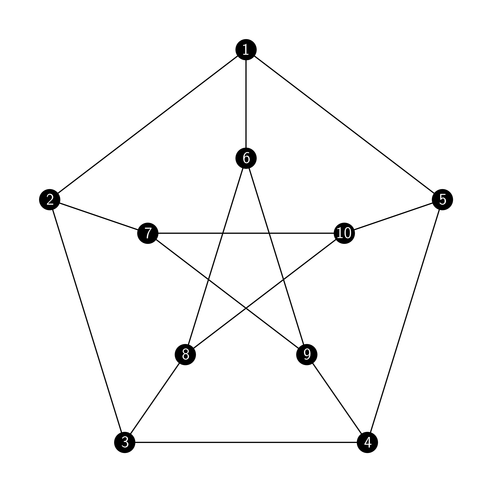
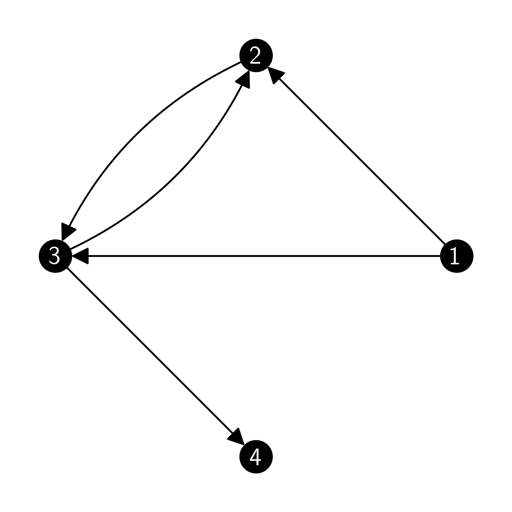
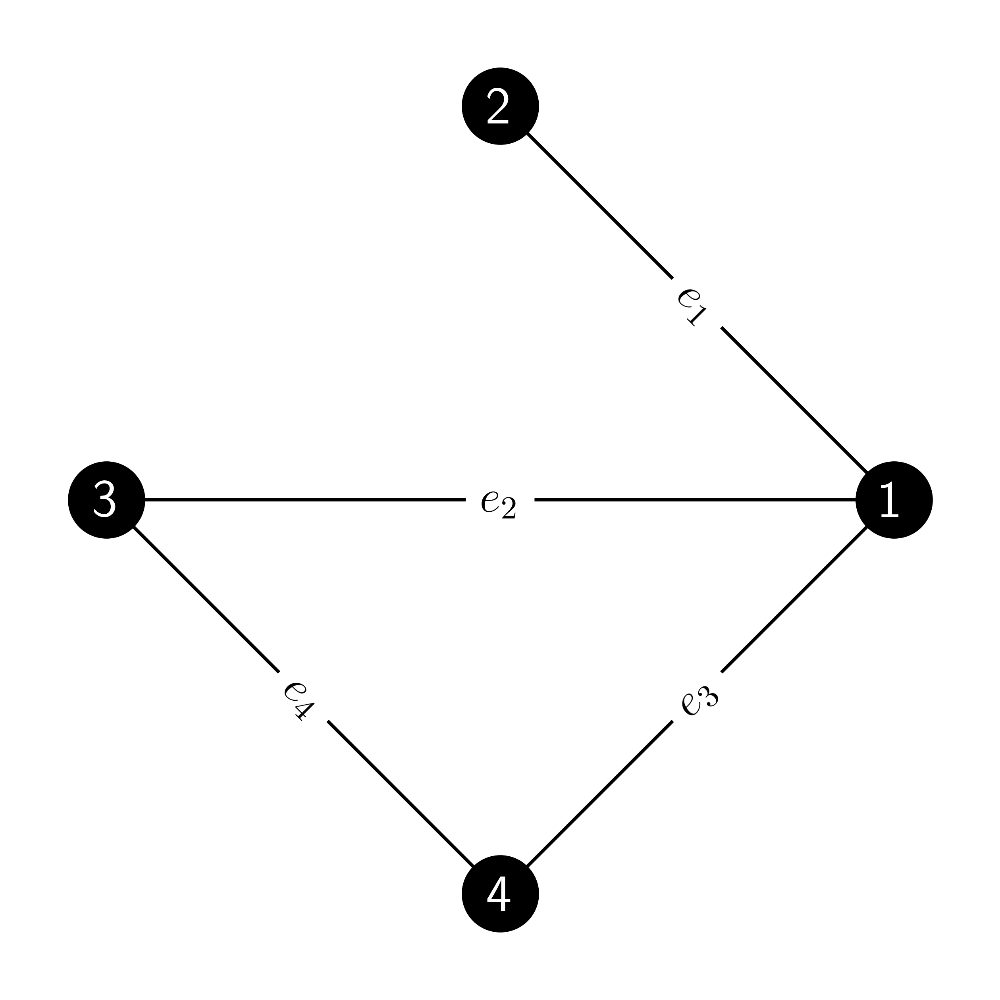
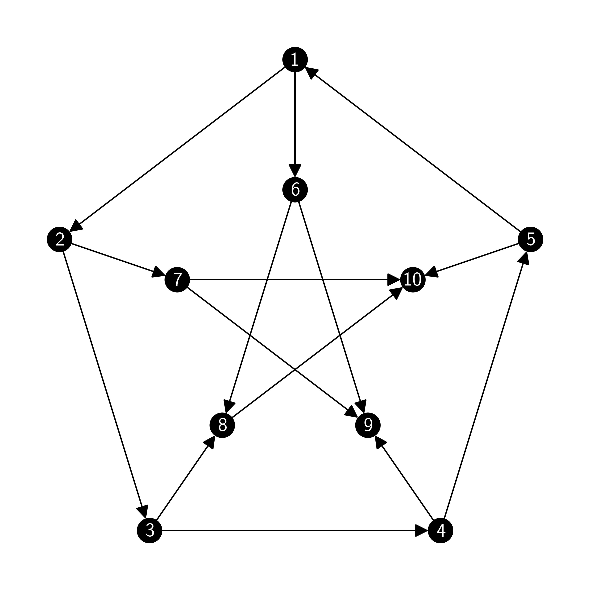

\(\newcommand{\bmu}{\boldsymbol{\mu}}\) \(\newcommand{\bSigma}{\boldsymbol{\Sigma}}\) \(\newcommand{\bfbeta}{\boldsymbol{\beta}}\) \(\newcommand{\bflambda}{\boldsymbol{\lambda}}\) \(\newcommand{\bgamma}{\boldsymbol{\gamma}}\) \(\newcommand{\bsigma}{{\boldsymbol{\sigma}}}\) \(\newcommand{\bpi}{\boldsymbol{\pi}}\) \(\newcommand{\btheta}{{\boldsymbol{\theta}}}\) \(\newcommand{\bphi}{\boldsymbol{\phi}}\) \(\newcommand{\balpha}{\boldsymbol{\alpha}}\) \(\newcommand{\blambda}{\boldsymbol{\lambda}}\) \(\renewcommand{\P}{\mathbb{P}}\) \(\newcommand{\E}{\mathbb{E}}\) \(\newcommand{\indep}{\perp\!\!\!\perp} \newcommand{\bx}{\mathbf{x}}\) \(\newcommand{\bp}{\mathbf{p}}\) \(\renewcommand{\bx}{\mathbf{x}}\) \(\newcommand{\bX}{\mathbf{X}}\) \(\newcommand{\by}{\mathbf{y}}\) \(\newcommand{\bY}{\mathbf{Y}}\) \(\newcommand{\bz}{\mathbf{z}}\) \(\newcommand{\bZ}{\mathbf{Z}}\) \(\newcommand{\bw}{\mathbf{w}}\) \(\newcommand{\bW}{\mathbf{W}}\) \(\newcommand{\bv}{\mathbf{v}}\) \(\newcommand{\bV}{\mathbf{V}}\) \(\newcommand{\bfg}{\mathbf{g}}\) \(\newcommand{\bfh}{\mathbf{h}}\) \(\newcommand{\horz}{\rule[.5ex]{2.5ex}{0.5pt}}\) \(\renewcommand{\S}{\mathcal{S}}\) \(\newcommand{\X}{\mathcal{X}}\) \(\newcommand{\var}{\mathrm{Var}}\) \(\newcommand{\pa}{\mathrm{pa}}\) \(\newcommand{\Z}{\mathcal{Z}}\) \(\newcommand{\bh}{\mathbf{h}}\) \(\newcommand{\bb}{\mathbf{b}}\) \(\newcommand{\bc}{\mathbf{c}}\) \(\newcommand{\cE}{\mathcal{E}}\) \(\newcommand{\cP}{\mathcal{P}}\) \(\newcommand{\bbeta}{\boldsymbol{\beta}}\) \(\newcommand{\bLambda}{\boldsymbol{\Lambda}}\) \(\newcommand{\cov}{\mathrm{Cov}}\) \(\newcommand{\bfk}{\mathbf{k}}\) \(\newcommand{\idx}[1]{}\) \(\newcommand{\xdi}{}\)
5.2. Background: basic concepts in graph theory#
In this section, we cover the basics of graph theory. We also introduce the NetworkX package.
5.2.1. Undirected graphs#
We start with undirected graphs.
DEFINITION (Undirected Graph) \(\idx{graph}\xdi\) \(\idx{undirected graph}\xdi\) An undirected graph (or graph for short) is a pair \(G = (V,E)\) where \(V\) is the set of vertices (or nodes) and
is the set of edges. \(\natural\)
Note that, unless otehrwise stated, we typically do not allow self-loops, i.e., edges that connect a vertex to itself.

We occasionally write \(V(G)\) and \(E(G)\) for the vertices and edges of the graph \(G\). In our case, the set of vertices \(V\) is always finite.
DEFINITION (Incidence and Adjacency) A vertex \(v \in V\) is incident\(\idx{incident}\xdi\) with an edge \(e \in E\) if \(v \in e\). The incident vertices of an edge are called its endvertices. Two vertices \(u,v \in V\) are adjacent\(\idx{adjacent}\xdi\) (or neighbors), which we denote by \(u \sim v\), if \(\{u,v\} \in E\). \(\natural\)
DEFINITION (Neighborhood and Degree) The set of adjacent vertices of \(v\), denoted by \(N(v)\), is called the neighborhood\(\idx{neighborhood}\xdi\) of \(v\) and its size, i.e., \(\delta(v):=|N(v)|\), is the degree\(\idx{degree}\xdi\) of \(v\). A vertex \(v\) with \(\delta(v) = 0\) is called isolated\(\idx{isolated}\xdi\). A graph is called \(d\)-regular\(\idx{regular}\xdi\) if all its degrees are \(d\). \(\natural\)
A well-known result, sometimes referred to as the Handshaking Lemma\(\idx{handshaking lemma}\xdi\), says that the sum of all degrees is twice the number of edges (prove it!).
EXAMPLE: (Petersen, continued) Returning to the Petersen graph, all its vertices have degree \(3\), that is, it is \(3\)-regular. In particular there is no isolated vertex. \(\lhd\)
DEFINITION (Path) A path\(\idx{path}\xdi\) in \(G\) is a sequence of (not necessarily distinct) vertices \(x_0 \sim x_1 \sim \cdots \sim x_k\) with each consecutive pair being adjacent. The number of edges, \(k\), is called the length of the path. If the endvertices \(x_0\), \(x_k\) coincide, that is, \(x_0 = x_k\), we call the path a cycle\(\idx{cycle}\xdi\). If the vertices are all distinct (except possibly for the endvertices), we say that the path (or cycle) is self-avoiding. The length of the shortest self-avoiding path connecting two distinct vertices \(u, v\) is called the graph distance\(\idx{graph distance}\xdi\) between \(u\) and \(v\), denoted by \(\rho(u,v)\). \(\natural\)
DEFINITION (Connected) We write \(u \leftrightarrow v\) if there is a path between \(u\) and \(v\). (By convention \(u \leftrightarrow u\).) A graph is connected if there is a path between any two of its vertices, that is, if \(u \leftrightarrow v\) for all \(u, v \in V\). \(\natural\)
EXAMPLE: (Petersen, continued) The Petersen graph is connected. \(\lhd\)
LEMMA The relation \(\leftrightarrow\) is an equivalence relation, that is, \(u \leftrightarrow u\) for all \(u\) (reflexivity), \(u \leftrightarrow v\) if and only if \(v \leftrightarrow u\) (symmetry), and \(u \leftrightarrow v\) and \(v \leftrightarrow w\) implies \(u \leftrightarrow w\) (transitivity). \(\flat\)
Proof: The first one is immediate from the definition. The second one is obtained by noting that we can reverse the path between \(u\) and \(v\) to construct a path between \(v\) and \(u\). The third one is obtained by noting that we can add a path between \(v\) and \(w\) to a path between \(u\) and \(v\) to construct a path between \(u\) and \(w\). \(\square\)
DEFINITION (Connected Components) The equivalence class \(C[u] = \{v \in V\,:\, u \leftrightarrow v\}\), that is, the set of all vertices reachable from \(u\) through a path, is called a connected component\(\idx{connected component}\xdi\). A graph is connected if and only if it has only one connected component. \(\natural\)
We show next that the connected components (excluding repeats) form a partition of \(V\). It holds more generally for the equivalence classes of any equivalence relation.
LEMMA The following statements are equivalent:
a) \(u \leftrightarrow v\)
b) \(C[u] = C[v]\)
c) \(C[u] \cap C[v] \neq \emptyset\)
\(\flat\)
As a consequence, either \(C[u] = C[v]\) or \(C[u] \cap C[v] = \emptyset\).
Proof:
a) \(\implies\) b): Let \(w \in C[u]\). So \(u \leftrightarrow w\). Symmetry and transitivity imply that \(v \leftrightarrow w\), which proves the claim.
b) \(\implies\) c): Since \(u \in C[u]\) by reflexivity, we have \(\emptyset \neq C[u] = C[v] = C[u] \cap C[v]\).
c) \(\implies\) a): Let \(w \in C[u] \cap C[v]\). Then \(u \leftrightarrow w\) and \(v \leftrightarrow w\). Symmetry and transitivity imply that \(u \leftrightarrow v\).
\(\square\)

Subgraphs and special graphs: In network analysis, one is often interested in finding or counting interesting motifs or subgraphs within a much larger graph. We will not cover this important problem in network analysis much here, but see the Exercises section.
DEFINITION (Subgraph) A subgraph\(\idx{subgraph}\xdi\) of \(G = (V,E)\) is a graph \(G' = (V',E')\) with \(V' \subseteq V\) and \(E' \subseteq E\). Implicit in this definition is the fact that the edges in \(E'\) are incident only to \(V'\). The subgraph \(G'\) is said to be induced if
that is, if it contains all edges of \(G\) between the vertices of \(V'\). In that case the notation \(G' := G[V']\) is used. \(\natural\)
DEFINITION (Spanning Subgraph) A subgraph is said to be spanning\(\idx{spanning subgraph}\xdi\) if \(V' = V\). \(\natural\)
DEFINITION (Clique) A subgraph containing all possible edges between its vertices is called a complete subgraph or clique\(\idx{clique}\xdi\). \(\natural\)
EXAMPLE: (continued) The Petersen graph contains no triangle (that is, complete subgraphs with \(3\) vertices), induced or not. \(\lhd\)
DEFINITION (Tree and forest) A forest\(\idx{forest}\xdi\) is a graph with no self-avoiding cycle. A tree\(\idx{tree}\xdi\) is a connected forest. Vertices of degree \(1\) are called leaves. A spanning tree of \(G\) is a subgraph which is a tree and is also spanning. \(\natural\)
NUMERICAL CORNER: In Python, the NetworkX package provides many functionalities for defining, modifying and plotting graphs. For instance, many standard graphs can be defined conveniently. The petersen_graph() function defines the Petersen graph.
G = nx.petersen_graph()
The graph can be plotted using the function networkx.draw_networkx(). Recall that in NumPy array indices start at \(0\). Consistently, NetworkX also names vertices starting at \(0\). Note, however, that this conflicts with our mathematical conventions.
nx.draw_networkx(G, node_color='black', font_color='white', node_size=200)
plt.axis('off')
plt.show()
Other standard graphs can be generated with special functions, e.g. complete graphs using complete_graph(). See here for a complete list.
G = nx.complete_graph(3)
nx.draw_networkx(G, node_color='black', font_color='white')
plt.axis('off')
plt.show()
See here and here for a list of functions to access various properties of a graph. Here are a few examples:
G = nx.path_graph(10)
nx.draw_networkx(G, node_color='black', font_color='white')
plt.axis('off')
plt.show()
G.number_of_nodes() # number of nodes
10
G.number_of_edges() # number of edges
9
G.has_node(7) # checks whether the graph has a particular vertex
True
G.has_node(10)
False
G.has_edge(0, 1) # checks whether the graph has a particular edge
True
G.has_edge(0, 2)
False
[n for n in G.neighbors(2)] # returns a list of neighbors of the specified vertex
[1, 3]
nx.is_connected(G) # checks whether the graph is connected
True
[cc for cc in nx.connected_components(G)] # returns the connected components
[{0, 1, 2, 3, 4, 5, 6, 7, 8, 9}]
for e in G.edges():
print(e)
(0, 1)
(1, 2)
(2, 3)
(3, 4)
(4, 5)
(5, 6)
(6, 7)
(7, 8)
(8, 9)
Another way of specifying a graph is to start with an empty graph with a given number of vertices and then add edges one by one. The following command creates a graph with \(4\) vertices and no edge (see empty_graph()).
G = nx.empty_graph(4)
G.add_edge(0, 1)
G.add_edge(2, 3)
G.add_edge(0, 3)
G.add_edge(3, 0)
nx.draw_networkx(G, node_color='black', font_color='white')
plt.axis('off')
plt.show()
\(\unlhd\)
5.2.2. Directed graphs#
We will also need directed graphs.
DEFINITION (Directed Graph) A directed graph\(\idx{directed graph}\xdi\) (or digraph for short) is a pair \(G = (V,E)\) where \(V\) is a set of vertices (or nodes) and
is a set of directed edges (or arcs). \(\natural\)
Note that, in the directed case, we explicitly allow self-loops\(\idx{self-loop}\xdi\), i.e., edges of the form \((u,u)\) that connect a vertex to itself.
Note that, unlike the undirected case, in a digraph the edges are ordered pairs – which is taken to mean that they have an orientation. If \(e = (i,j) \in E\) is an edge in a digraph \(G = (V,E)\), then \(i\) is called the source of \(e\) and \(j\) is the destination.

The definitions discussed in the undirected case can be adapted to the directed case.
In the directed case, one distinguishes between the out-degree and the in-degree.
DEFINITION (Out-degree and in-degree) Let \(G = (V,E)\) be a digraph. The out-degree\(\idx{out-degree}\xdi\) of \(v \in V\), denoted by \(\delta^+(v)\), is the number of edges with source \(v\). The in-degree\(\idx{in-degree}\xdi\) of \(v\), denoted by \(\delta^-(v)\), is the number of edges with destination \(v\). \(\natural\)
Paths and connectivity are also generalized naturally.
DEFINITION (Directed Path) A directed path\(\idx{directed path}\xdi\) is a sequence of vertices \(x_0, \ldots, x_k\) with \((x_{i-1},x_i) \in E\) for all \(i=1,\ldots,k\). We write \(u \to v\) if there is such a path with \(x_0 = u\) and \(x_k = v\). If the endvertices \(x_0\), \(x_k\) coincide, that is, \(x_0 = x_k\), we call it a directed cycle\(\idx{directed cycle}\xdi\). \(\natural\)
DEFINITION (Communication) We say that \(u,v \in V\) communicate\(\idx{communicate}\xdi\), which we denote by \(u \leftrightarrow v\), if \(u \to v\) and \(v \to u\). The \(\leftrightarrow\) relation is again an equivalence relation. The equivalence classes of \(\leftrightarrow\) are called the strongly connected components of \(G\). \(\natural\)
DEFINITION (Strongly Connected) A digraph is strongly connected\(\idx{strongly connected}\xdi\) if any two of its vertices communicate, that is, if \(u \leftrightarrow v\) for all \(u, v \in V\). Or put differently, if there is only one strongly connected component\(\idx{strongly connected component}\xdi\). \(\natural\)
DEFINITION (Directed Acyclic Graph) A digraph is said to be a directed acyclic graph (DAG)\(\idx{directed acyclic graph}\xdi\) if it contains no directed cycle. \(\natural\)
NUMERICAL CORNER: The package NetworkX also supports digraphs.
G = nx.DiGraph()
nx.add_star(G, [0, 1, 2, 3, 4])
nx.draw_networkx(G, node_color='black', font_color='white')
plt.axis('off')
plt.show()
Another way of specifying a digraph is to start with an empty graph with a given number of vertices and then add edges one by one (compare to the undirected case above).
G = nx.DiGraph()
G.add_edge(0, 1)
G.add_edge(2, 3)
G.add_edge(0, 3)
G.add_edge(3, 0)
G.add_edge(1, 1)
nx.draw_networkx(G, node_color='black', font_color='white')
plt.axis('off')
plt.show()
Note that edges in both directions are depicted here with a double-arrow. Also the self-loop is hard to see. We can use
networkx.draw_networkx_edges() (together with
networkx.draw_networkx_nodes() and
networkx.draw_networkx_labels())
to have more control over the drawing of the edges.
pos = nx.spring_layout(G, seed=42)
nx.draw_networkx_nodes(G, pos, node_color='black')
nx.draw_networkx_labels(G, pos, font_color='white')
nx.draw_networkx_edges(G, pos, connectionstyle="arc3,rad=0.3")
plt.axis('off')
plt.show()
\(\unlhd\)
5.2.3. Matrix representations of graphs#
A convenient and useful way of specifying a graph is through a matrix representation. There are many such representations.
We start with the adjacency matrix.
DEFINITION (Adjacency Matrix) Assume the (undirected) graph \(G = (V,E)\) has \(n = |V|\) vertices numbered \(1,\ldots,n\). The adjacency matrix\(\idx{adjacency matrix}\xdi\) \(A\) of \(G\) is the \(n\times n\) symmetric matrix defined as
\(\natural\)
EXAMPLE: The adjancency matrix of the following graph:

is
Note that it is indeed symmetric. \(\lhd\)
Another useful matrix associated to a graph is its incidence matrix. For convenience, we assume again that the vertices of \(G = (V,E)\) are numbered \(1, \ldots, n\), where \(n\) is the number of vertices. We assume further that the edges are labeled \(e_1, \ldots, e_{m}\), where \(m\) is the numebr of edges.
DEFINITION (Incidence Matrix) The incidence matrix\(\idx{incidence matrix}\xdi\) of an undirected graph \(G = (V, E)\) is the \(n \times m\) matrix \(B\), where \(n = |V|\) and \(m =|E|\) are the numbers of vertices and edges respectively, such that \(B_{ij} = 1\) if the vertex \(i\) and edge \(e_j\) are incident and 0 otherwise. \(\natural\)
EXAMPLE: (continued) The incidence matrix of the graph from the previous example is given by
This matrix is not symmetric. In fact, in general, it is not even square. \(\lhd\)
NUMERICAL CORNER: Using NetworkX, the adjacency matrix of a graph can be obtained with adjacency_matrix(). By default, it returns a SciPy sparse matrix. Alternatively, one can get a regular array with toarray().
G = nx.complete_graph(4)
A = nx.adjacency_matrix(G)
print(A)
(0, 1) 1
(0, 2) 1
(0, 3) 1
(1, 0) 1
(1, 2) 1
(1, 3) 1
(2, 0) 1
(2, 1) 1
(2, 3) 1
(3, 0) 1
(3, 1) 1
(3, 2) 1
A = nx.adjacency_matrix(G).toarray()
print(A)
[[0 1 1 1]
[1 0 1 1]
[1 1 0 1]
[1 1 1 0]]
The incidence matrix is obtained with incidence_matrix() – again as a sparse array.
B = nx.incidence_matrix(G)
print(B)
(0, 0) 1.0
(1, 0) 1.0
(0, 1) 1.0
(2, 1) 1.0
(0, 2) 1.0
(3, 2) 1.0
(1, 3) 1.0
(2, 3) 1.0
(1, 4) 1.0
(3, 4) 1.0
(2, 5) 1.0
(3, 5) 1.0
B = nx.incidence_matrix(G).toarray()
print(B)
[[1. 1. 1. 0. 0. 0.]
[1. 0. 0. 1. 1. 0.]
[0. 1. 0. 1. 0. 1.]
[0. 0. 1. 0. 1. 1.]]
\(\unlhd\)
In the digraph case, the definitions are adapted as follows. The adjacency matrix\(\idx{adjacency matrix}\xdi\) \(A\) of a digraph \(G = (V, E)\) is the matrix defined as
The incidence matrix\(\idx{incidence matrix}\xdi\) of a digraph \(G\) with vertices \(1,\ldots,n\) and edges \(e_1, \ldots, e_m\) is the matrix \(B\) such that \(B_{ij} = -1\) if egde \(e_j\) leaves vertex \(i\), \(B_{ij} = 1\) if egde \(e_j\) enters vertex \(i\), and 0 otherwise.
Returning to undirected graphs, an orientation of an (undirected) graph \(G = (V, E)\) is a choice of direction for each of its edges, turning it into a digraph.
DEFINITION (Oriented Incidence Matrix) An oriented incidence matrix\(\idx{oriented incidence matrix}\xdi\) of an undirected graph \(G = (V, E)\) is the incidence matrix of an orientation of \(G\). \(\natural\)

NUMERICAL CORNER: We revisit an earlier directed graph.
G = nx.DiGraph()
G.add_edge(0, 1)
G.add_edge(2, 3)
G.add_edge(0, 3)
G.add_edge(3, 0)
G.add_edge(1,1)
We compute the adjacency and incidence matrices. For the incidence matrix, one must specify oriented=True for the oriented version.
A = nx.adjacency_matrix(G).toarray()
print(A)
[[0 1 0 1]
[0 1 0 0]
[0 0 0 1]
[1 0 0 0]]
B = nx.incidence_matrix(G, oriented=True).toarray()
print(B)
[[-1. -1. 0. 0. 1.]
[ 1. 0. 0. 0. 0.]
[ 0. 0. 0. -1. 0.]
[ 0. 1. 0. 1. -1.]]
Revisiting an ealier undirected graph, we note that incidence_matrix() can also produce an arbitrary oriented incidence matrix by using the oriented=True option.
G = nx.empty_graph(4)
G.add_edge(0, 1)
G.add_edge(2, 3)
G.add_edge(0, 3)
G.add_edge(3, 0)
B = nx.incidence_matrix(G, oriented=True).toarray()
print(B)
[[-1. -1. 0.]
[ 1. 0. 0.]
[ 0. 0. -1.]
[ 0. 1. 1.]]
\(\unlhd\)
5.2.4. Laplacian matrix#
A main matrix of interest for us will be the Laplacian matrix. It is a graph analogue of the Laplace-Beltrami operator in differential geometry. We will show in particular that it contains useful information about the connectedness of the graph and we will describe an application to graph partitioning in the next section. But first some theory.
Recall that, given a graph \(G = (V, E)\), the quantity \(\delta(v)\) denotes the degree of \(v \in V\).
DEFINITION (Degree Matrix) Let \(G = (V,E)\) be a graph with vertices \(V = \{1, \ldots, n\}\). The degree matrix\(\idx{degree matrix}\xdi\) is the diagonal matrix with the degrees on the diagonal, i.e., \(D = \mathrm{diag}(\delta(1), \ldots, \delta(n))\). \(\natural\)
The key definition is the following.
DEFINITION (Laplacian Matrix) Let \(G = (V,E)\) be a graph with vertices \(V = \{1, \ldots, n\}\) adjacency matrix \(A \in \mathbb{R}^{n \times n}\) and degree matrix \(D = \mathrm{diag}(\delta(1), \ldots, \delta(n))\). The Laplacian matrix\(\idx{Laplacian matrix}\xdi\) associated to \(G\) is defined as \(L = D - A\). Its entries are
\(\natural\)
Like the adjacency matrix, the Laplacian matrix is symmetric. Unlike the adjacency matrix, however, it is also positive semidefinite.
THEOREM (Properties of the Laplacian) \(\idx{properties of the Laplacian theorem}\xdi\) For any graph \(G\), the Laplacian matrix is symmetric and positive semidefinite. \(\sharp\)
Proof: Observe that the Laplacian matrix \(L\) of a graph \(G\) is indeed symmetric:
where we used that both \(D\) and \(A\) are themselves symmetric.
To prove the second claim, we need a lemma.
LEMMA (Laplacian and Incidence) \(\idx{Laplacian and incidence lemma}\xdi\) Let \(L\) be the Laplacian matrix of a graph \(G\). Let \(B\) be any oriented incidence matrix of \(G\). Then
\(\flat\)
Proof idea: We just check the claim entry by entry.
Proof: Enumerate the edges \(e_1,\ldots,e_m\). Let \(b_{ik}\) be entry \((i,k)\) of \(B\). For \(i \neq j\), entry \((i,j)\) of \(B B^T\)
Note that \(b_{ik} b_{jk}\) is equal to (a) \(0\) if \(i\) or \(j\) (or both) are not incident with \(e_k\) or (b) \(-1\) if both \(i\) and \(j\) are incident with \(e_k\) (since one of \(i\) or \(j\) has a \(1\) in the column of \(B\) corresponding to \(e_k\) and the other one has a \(-1\)). So \((B B^T)_{ij} = -1\) when \(\{i,j\} \in E\) and is otherwise \(0\). So it coincides with the corresponding entry of the Laplacian matrix there.
For \(i = j\),
where we used that \(b_{xy}^2 = 1\) because \(b_{xy} \in \{-1,1\}\) when \(\{x,y\} \in E\). Again it coincides with the corresponding entry of the Laplacian matrix. \(\square\)
We return to the proof of the theorem. By the previous lemma, for any \(\mathbf{x} \in \mathbb{R}^n\),
That proves positive semidefiniteness. \(\square\)
Self-assessment quiz (with help from Claude, Gemini, and ChatGPT)
1 Which of the following is NOT a valid definition of an undirected graph?
a) A pair \(G = (V, E)\), where \(V\) is the set of vertices and \(E\) is a set of unordered pairs of vertices.
b) A collection of nodes connected by edges, where the edges have no direction.
c) A pair \(G = (V, E)\), where \(V\) is the set of vertices and \(E\) is a set of ordered pairs of vertices.
d) A mathematical structure used to model pairwise relations between objects.
2 In a graph, what does the equivalence relation \(\leftrightarrow\) signify?
a) Two vertices are in the same connected component.
b) Two vertices have the same degree.
c) Two vertices are adjacent.
d) Two vertices are part of a cycle.
3 In a directed graph, what is the relationship between the in-degree and out-degree of a vertex?
a) The in-degree is always greater than or equal to the out-degree.
b) The out-degree is always greater than or equal to the in-degree.
c) The in-degree and out-degree are always equal.
d) There is no fixed relationship between the in-degree and out-degree.
4 Which of the following is NOT a property of the Laplacian matrix of a graph?
a) It is symmetric
b) It is positive semidefinite
c) It is always invertible
d) Its entries sum to zero in each row and column
5 Which matrix representation of a graph is typically symmetric?
a) Adjacency matrix of an undirected graph.
b) Incidence matrix of an undirected graph.
c) Adjacency matrix of a directed graph.
d) All of the above.
Answer for 1: c. Justification: The text defines an undirected graph as a pair \(G = (V, E)\), where \(E\) is a set of unordered pairs of vertices, not ordered pairs.
Answer for 2: a. Justification: The text defines the relation \(\leftrightarrow\) as an equivalence relation that indicates two vertices are in the same connected component.
Answer for 3: d. Justification: The in-degree and out-degree of a vertex in a directed graph depend on the number of edges entering and leaving the vertex, respectively, and there is no fixed relationship between them.
Answer for 4: c. Justification: The text proves that the Laplacian matrix is symmetric and positive semidefinite, but does not claim that it is always invertible.
Answer for 5: a. Justification: The text states that the adjacency matrix of an undirected graph is symmetric.